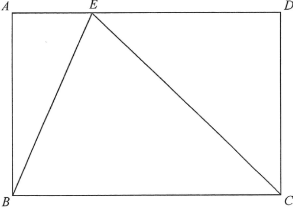

幾何 · 畢氏定理的逆定理

$BE=8$、$CE=15$、$BC=17$，先測試畢氏關係：
$$8^{2}+15^{2}=64+225=289=17^{2}$$
三邊符合 $a^{2}+b^{2}=c^{2}$，所以 $BC$ 是斜邊。
$$\angle BEC=90^{\circ}$$
因此 $BE$、$CE$ 是直角三角形的兩股。
$$[\triangle BCE]=\frac{1}{2}(8)(15)=60\ \text{cm}^{2}$$
$$[ABCD]=2\times60=120\ \text{cm}^{2}$$
亦可用 $BC\times AB$：由面積 $60=\tfrac12(17)(AB)$ 得 $AB=\dfrac{120}{17}$，故面積為 $17\times\dfrac{120}{17}=120$。答案 C。